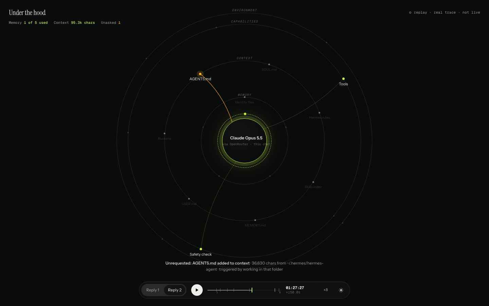
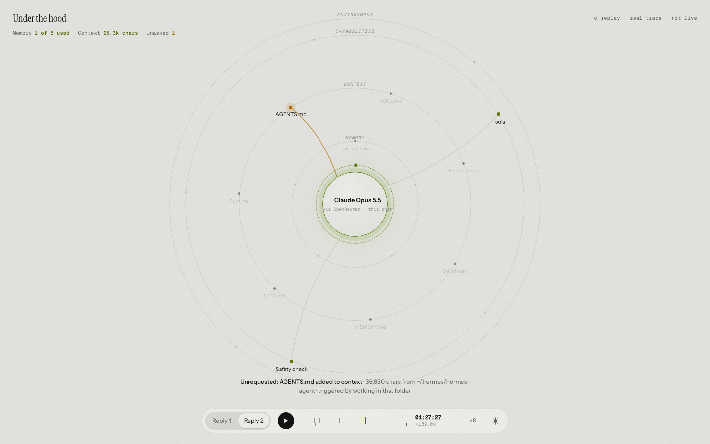
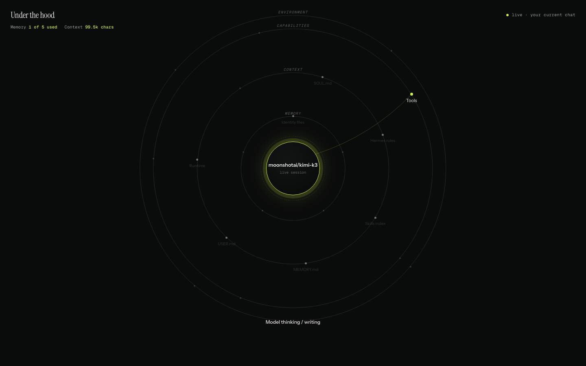

Local prototype · AI Labs
Under the hood.
A visual experiment in making AI activity easier to follow, starting with the model and tool calls recorded in my own session logs.
The work
I built three visual directions around the same two recorded replies, with playback, inspection controls and dark and light themes. I chose the Organism direction: a model at the centre, surrounded by memory, context, capabilities and environment.
A separate local live prototype reads session logs and updates the view with the model and tool activity it can observe. It is a first connection to real activity, not a complete account of everything the agent uses.
Why I am building it
I use agents daily, but the chat window makes it difficult to tell what happened behind an answer. I want to understand what the system accessed, which tools it called and what I still cannot see—without piecing it together from logs.
This is one experiment within my visual AI environment: a broader project about understanding and directing AI systems.
What the view can and cannot tell you
The recorded studies let me test how a reply’s activity could be presented. The live adapter currently maps a narrower set of log events into that visual structure. A lit node does not, by itself, prove which memory influenced an answer; a dark node does not prove that nothing happened there.
The prototype is not a complete cost monitor, permission system or audit trail. Those need explicit data coverage and validation. Keeping those limits visible is part of the design.


